Віддзеркалення
Refraction
Інтерактивний VR-проєкт про пам'ять, втрату та присутність, створений на основі особистого досвіду перебування у Соледарі, архівних матеріалів та спогадів людей, чиє життя було пов'язане з містом і навколишніми громадами.
An interactive VR project about memory, loss and presence, created from personal experience in Soledar, archival materials, and the memories of people whose lives were tied to the city and its surrounding communities.
«Віддзеркалення» – це інтерактивний VR-проєкт про пам'ять Соледара, створений на основі особистих спогадів, архівних матеріалів та історій людей, пов'язаних із містом і навколишніми громадами.
Проєкт не є реконструкцією міста. Натомість він створює фрагментарний цифровий простір, побудований за логікою сну та колективної пам'яті. Глядач потрапляє у стилізовані підземні середовища, натхненні соляними та гіпсовими шахтами Соледара, де взаємодіє з об'єктами, світлом, архівними відео, звуками та цифровими скульптурами.
У VR-простір інтегруються спогади вимушено переміщених людей, голосові історії, архівні фотографії та об'єкти, створені під час партисипативних воркшопів і надалі оцифровані у 3D.
«Віддзеркалення» досліджує пам'ять як форму присутності та пропонує безпечний спосіб взаємодії з досвідом втрати – через образ, звук, світло і колективне переживання.
"Refraction" is an interactive VR project about the memory of Soledar, created from personal recollections, archival materials, and the stories of people connected to the city and the surrounding communities.
The project is not a reconstruction of the city. Instead, it builds a fragmentary digital space structured by the logic of dreams and collective memory. Visitors enter stylised underground environments inspired by Soledar's salt and gypsum mines, where they interact with objects, light, archival footage, sound and digital sculptures.
Memories of forcibly displaced people, voice stories, archival photographs, and objects created during participatory workshops and later digitised in 3D are woven into the VR space.
"Refraction" explores memory as a form of presence and offers a safe way of engaging with the experience of loss — through image, sound, light, and collective feeling.

Спроба побачити місто таким, яким воно збереглося в пам'яті людей: фрагментарним, особистим, крихким, але живим.
"Refraction" explores the city through distortion rather than direct reflection — a refracted memory, shaped by loss, transformation, and the passage through physical, digital, and virtual states.
Глядач потрапляє у підземний простір, натхненний соляними та гіпсовими шахтами Соледара. Це не буквальні копії печер чи виробничих зон, а стилізовані середовища, де геологія, світло, звук та цифрові об'єкти працюють як носії пам'яті.
У першій печері глядач взаємодіє з великою скульптурою-контуром, що активується лише через присутність людини. Світло з'являється як метафора пам'яті: простір і об'єкти існують доти, доки хтось пам'ятає про них.
Інші простори проєкту звертаються до ландшафтів гіпсових шахт, затоплених кар'єрів, солончаків і степів Донеччини — де відео у технології Gaussian Splatting фрагментуються та розсипаються, ніби нестабільні спогади.
Проєкт не документує руйнування буквально. Це спроба говорити про місто не як про втрачений об'єкт, а як про живу пам'ять, що продовжує існувати через людей, їхні голоси, архіви та уяву.
The visitor enters an underground space inspired by Soledar's salt and gypsum mines. These are not literal copies of caves or industrial zones, but stylised environments where geology, light, sound and digital objects function as carriers of memory.
In the first cave, the visitor interacts with a large contour sculpture that activates only through human presence. Light appears as a metaphor for memory: the space and its objects exist for as long as someone remembers them.
Other spaces of the project turn to the landscapes of gypsum mines, flooded quarries, salt marshes and steppes of the Donetsk region — where video captured with Gaussian Splatting technology fragments and scatters, like unstable memories.
The project does not document destruction literally. It is an attempt to speak about the city not as a lost object, but as a living memory that continues to exist through people, their voices, archives and imagination.
Об'єкти пам'яті
Objects of memory
Кожна композиція у VR-просторі — фрагмент архіву, оцифрований спогад або колективно створений об'єкт. Наведіть курсор, щоб роздивитися ближче.
Each composition in the VR space is a fragment of the archive, a digitised memory, or an object created collectively. Hover to take a closer look.
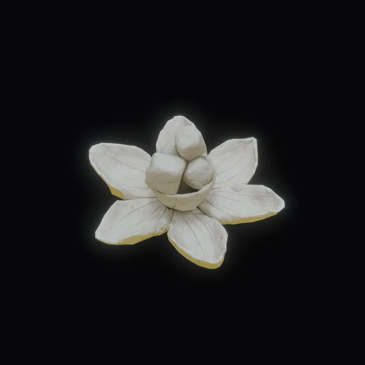
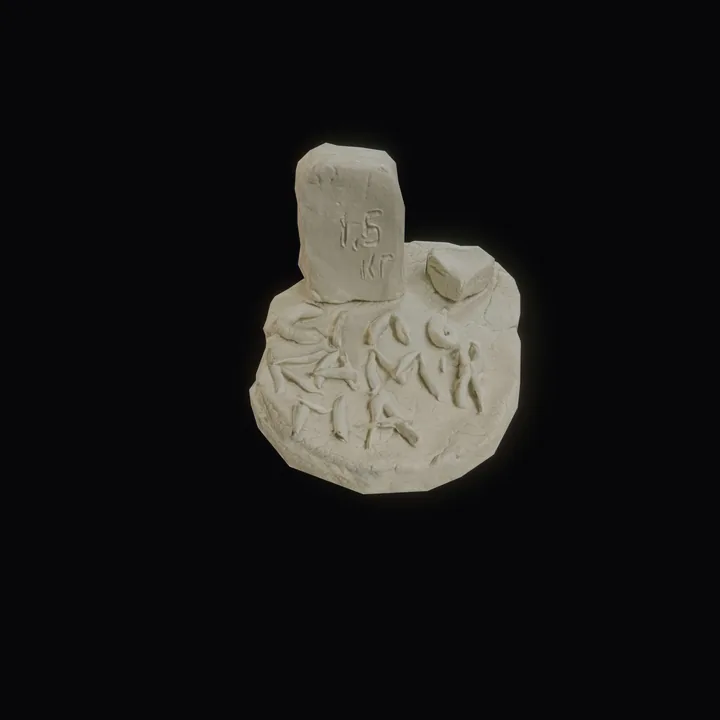
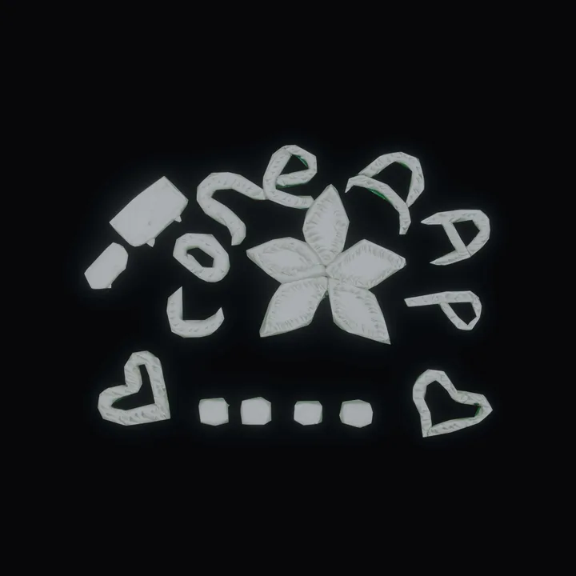
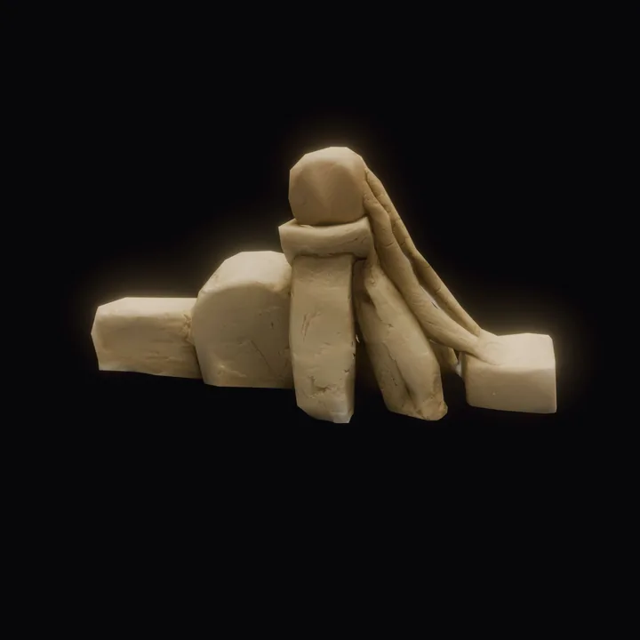
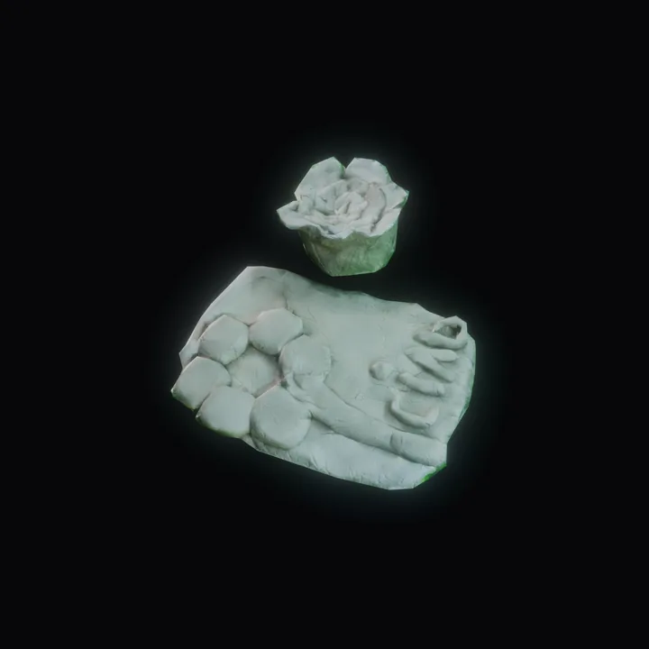
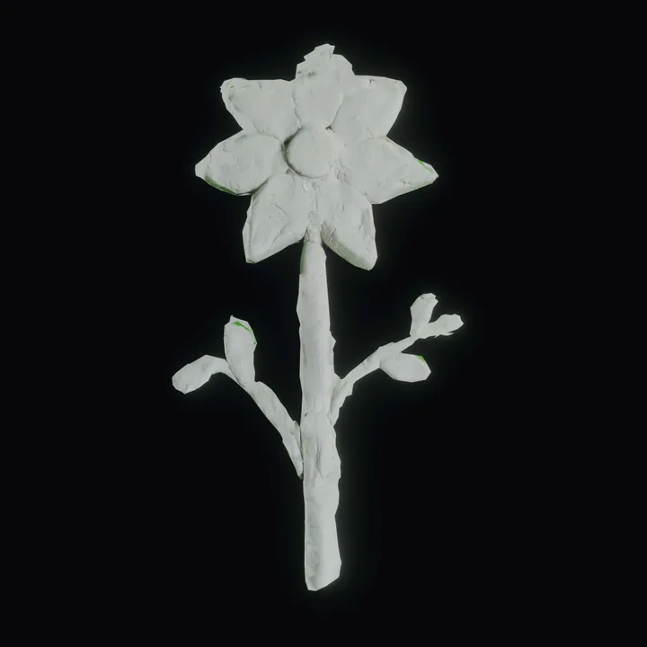
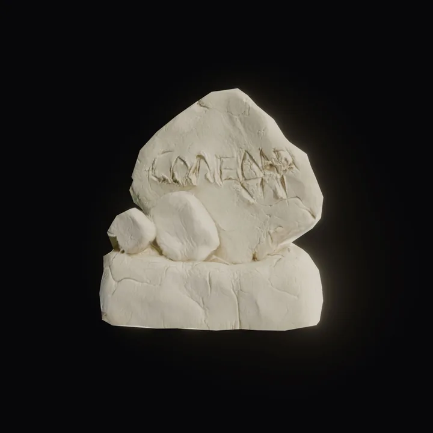
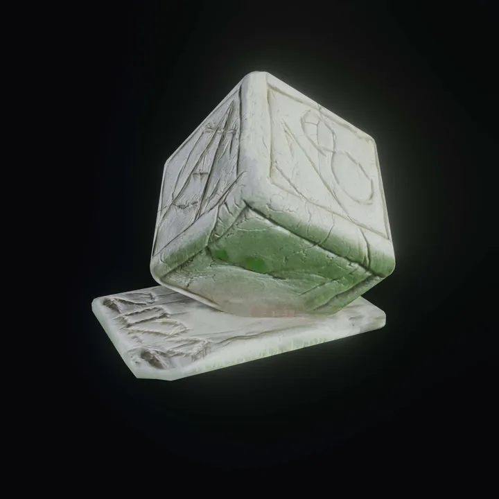
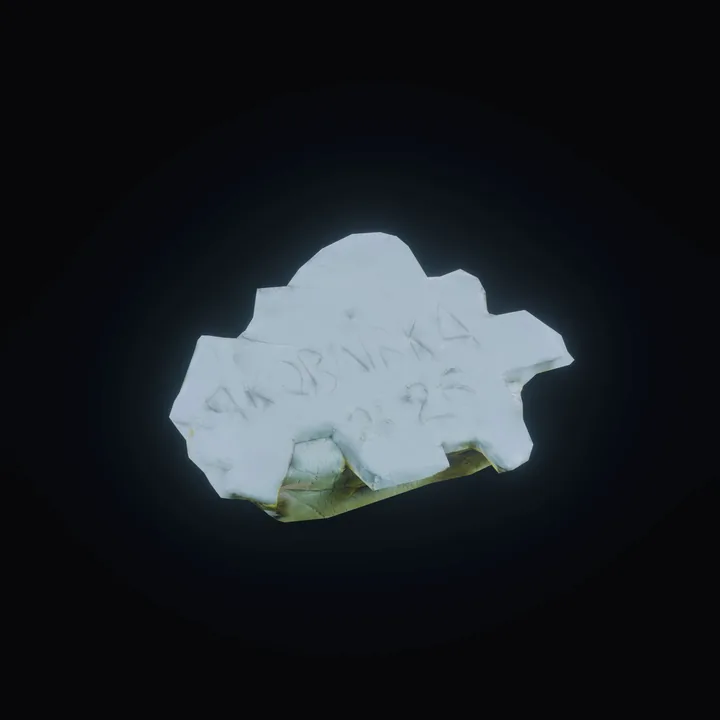
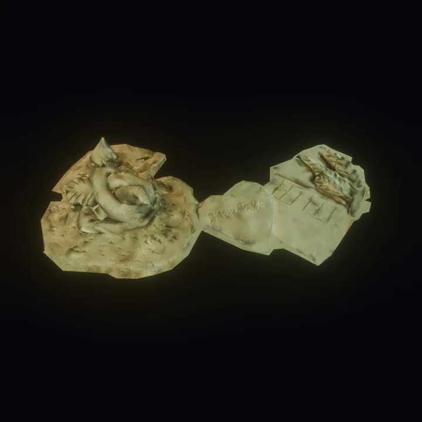
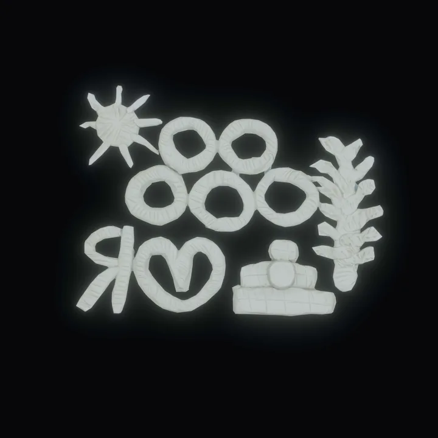
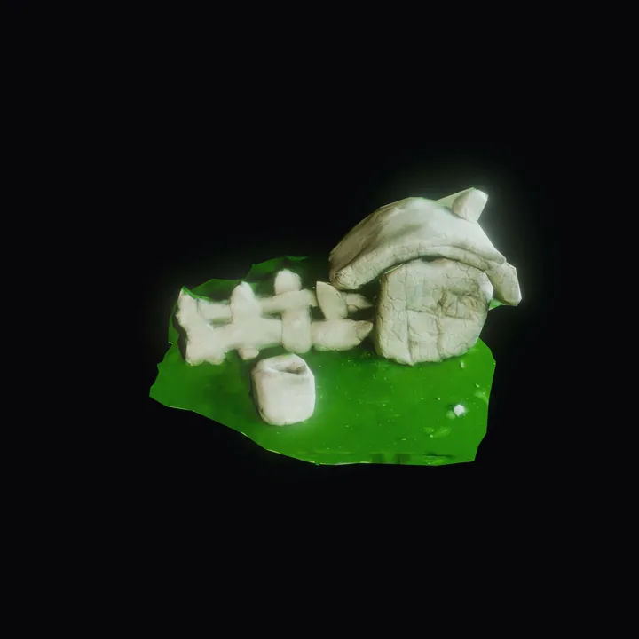


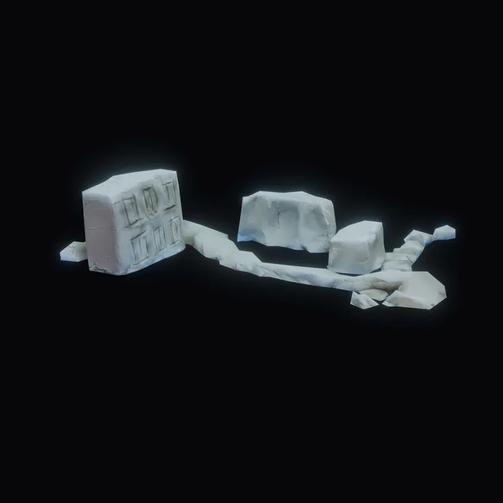
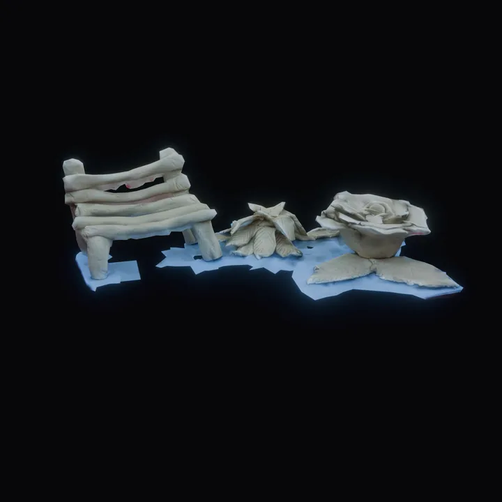
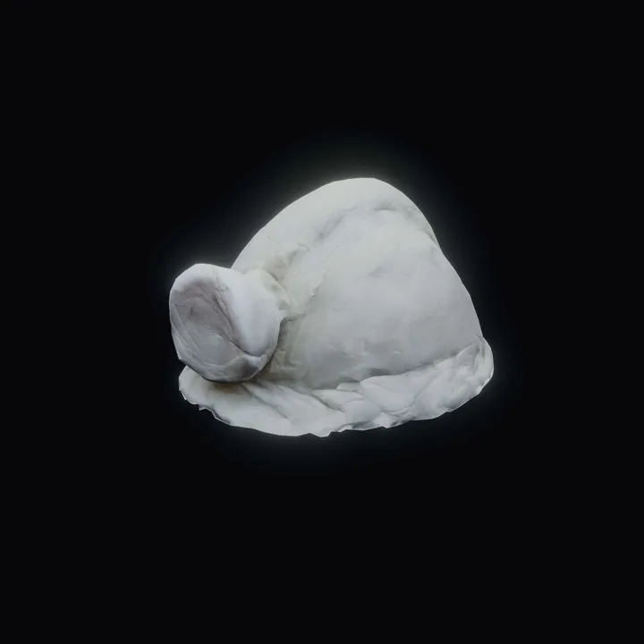
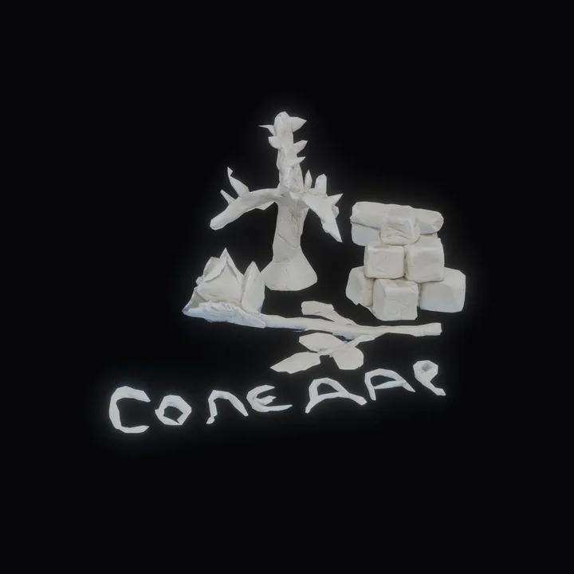
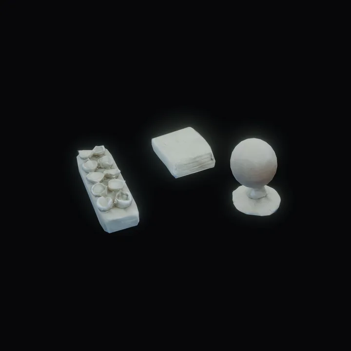
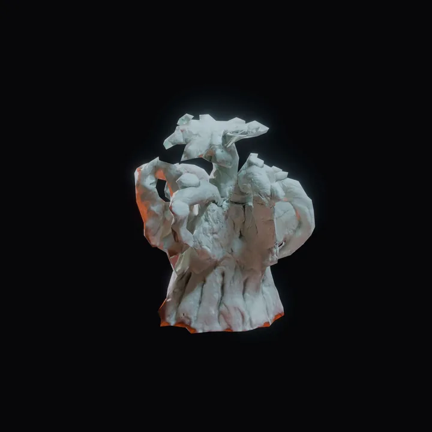

Детальні історії кожного артефакта з'являться на сайті найближчим часом. Detailed stories for each artifact will be added to the site soon.
Дудка Roksolana
Dudka
Маркар'ян Vartan
Markarian
Попов Oleksii
Popov
Тищук Anna
Tyshchuk
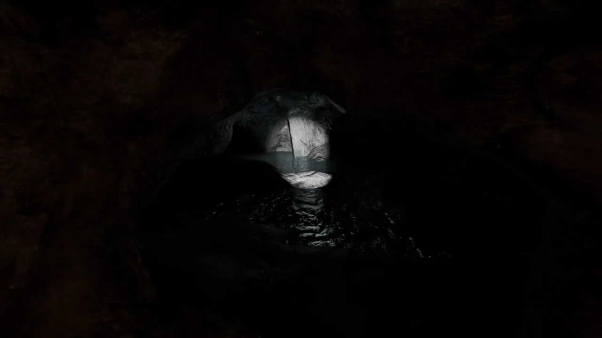
Від першої зустрічі до «Віддзеркалення»
From a first encounter to "Refraction"
Особиста історія авторки — від мистецької резиденції «Заземлення» у 2021 році до створення VR-проєкту у 2025–2026.
The author's personal story — from the "Grounding" art residency in 2021 to the creation of this VR project in 2025–2026.
Особлива подяка
Special thanks
- Соледарській міській раді (Соледарська міська військова адміністрація)
- Жителям Соледарської громади та учасникам воркшопів в м. Кам'янське, м. Дніпро та м. Київ
- Наталі Тищук
- Анні Тищук
- Лощаковій Світлані
- Теплюк Тетяні
- Євгенії Костенко
- Вартану Маркар'яну
- Soledar City Council (Soledar City Military Administration)
- Residents of the Soledar Community and participants of the workshops held in Kamianske, Dnipro, and Kyiv
- Natalia Tyshchuk
- Anna Tyshchuk
- Svitlana Loshchakova
- Tetiana Tepliuk
- Yevheniia Hontar
- Vartan Markarian
У проєкті використано
Archival materials
- Персональні архіви Роксолани Дудки з поїздки в 2021 році (в межах мистецької резиденції «Заземлення»).
- Фрагмент випуску програми «Факти» національного телеканалу ICTV (2021). Авторка репортажу — Ольга Чайко, оператори — Віктор Зеленков, Сергій Марченко.
- Фрагменти документального фільму «Фильм о ГП "Артемсоль"» (2014), опублікованого на офіційному YouTube-каналі ДП «Артемсіль».
- Personal archival materials documented by Roksolana Dudka during a research trip to Soledar in 2021, as part of the "Grounding" art residency.
- Excerpts from the ICTV national television news programme "Facts" (2021). Report by Olga Chaiko; camera by Viktor Zelenkov and Serhii Marchenko.
- Excerpts from the documentary "Film about the State Enterprise Artemsil" (2014), published on the official YouTube channel of the State Enterprise Artemsil.
Спадщина: простір для роботи
Heritage: Space for Work
Проєкт «Віддзеркалення» реалізований в межах резиденції «Спадщина. Практична робота», яка є частиною програми розвитку спроможності та мережування для локальних дієвців культури «Спадщина: простір для роботи» – спільної ініціативи для локальних діячів культури в Україні, зосередженої на переосмисленні культурної спадщини та зміцненні соціальної згуртованості.
Програма підтримується Програмою «Партнерство за сильну Україну» (PFRU), що фінансується урядами Великої Британії, Естонії, Канади, Норвегії, Фінляндії, Швейцарії та Швеції. Метою Програми є посилення стійкості України в умовах російської агресії шляхом надання критично важливої підтримки місцевим громадам у співпраці з українськими державними органами, громадянським суспільством, медіа та приватним сектором.
The VR experience "Refraction" was created as part of the "Heritage. Practical Work" Residency, within the capacity-building and networking programme "Heritage: Space for Work" — a collaborative initiative supporting local cultural practitioners in Ukraine through the reinterpretation of cultural heritage and the strengthening of social cohesion.
The programme is supported by the Partnership Fund for a Resilient Ukraine (PFRU), funded by the governments of the United Kingdom, Estonia, Canada, Norway, Finland, Switzerland, and Sweden. PFRU strengthens Ukraine's resilience in the context of russia's ongoing aggression by providing critical support to local communities in partnership with Ukrainian public institutions, civil society, media organisations, and the private sector.
- Мистецький арсенал
- Фонд ІЗОЛЯЦІЯ
- Харківський літературний музей
- Одеський національний художній музей
- Центр сучасної культури у Дніпрі
- Mystetskyi Arsenal
- IZOLYATSIA Foundation
- Kharkiv Literary Museum
- Odesa National Fine Arts Museum
- Center for Contemporary Culture in Dnipro
За сприяння Соледарської міської ради спільно з Програмою «Партнерство за сильну Україну».
With the support of the Soledar City Council, in partnership with the Partnership Fund for a Resilient Ukraine (PFRU).